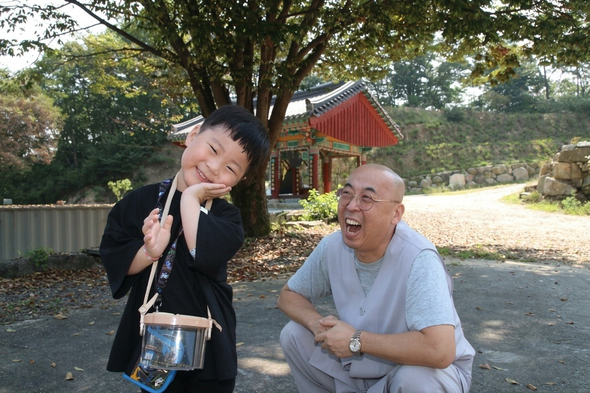
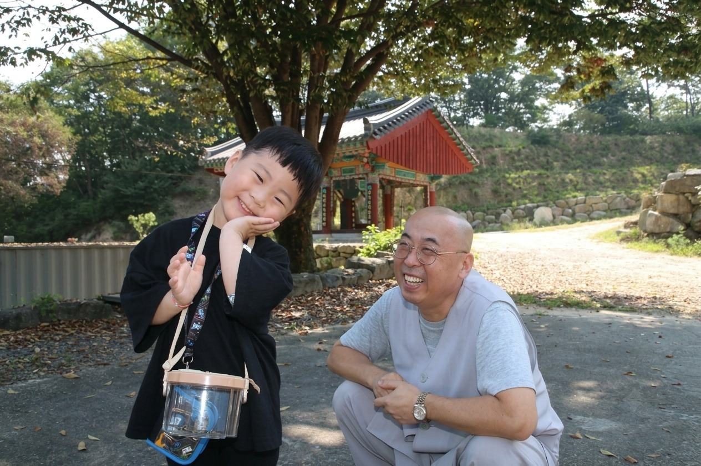

종단소개
종조
사명당유정
밀인종
소의경전
천수대비주
대불정수능엄경
대불정수능엄신주
종단문장
조직기구
총무원
총무원장
사무총장
신도회장
한마음선원
밀인불교대학
성주대재보존회
극락사
용문사
수암사
신고달사
종무행정
종무행정
종단게시판
관련단체
일불회
한국불교 종단연합회
공지 및 소식
공지사항
종단소식
종단갤러리
홈
/ 공지 및 소식 / 종단갤러리
종단갤러리


×
‹
›